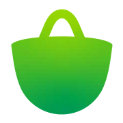

امروزت را سادهتر ببین.
کارهای امروز، پیشرفت امروز و حالوهوای روز — همه در یک نگاه، بدون آنکه لازم باشد چیزی را بشماری.

دفترچهای برای قدم بعدی
دفتَرچه کمک میکند بفهمی الان چه کاری ارزش انجام دادن دارد.
بهجای یک فهرست شلوغ، الان فقط این یک کار رو انجام بده:
چرا دفتَرچه
تفاوت دفتَرچه در مرتبکردن کارها نیست؛ در کوتاهکردن راهِ رسیدن به یک قدم بعدی است.
سه چیز معمولاً وسط راه میایستد؛ نه فهرست، نه یادآور.
هر کاری که مینویسی، همان لحظه مهم به نظر میرسد — و فهرست بلندتر و سنگینتر میشود.
بعضی روزها فقط زمان کم نیست؛ توان هم کم است. برنامهای که این را نمیداند، شکست میخورد.
لحظهای که باید انتخاب کنی از کدام شروع کنی، همان لحظهای است که همهچیز متوقف میشود.
میگویی امروز چه حالی داری.
یک کار پیشنهاد میشود، همراه با دلیلش.
همان یکی را شروع میکنی، نه کل فهرست را.
فقط همین یکی، تا تمام شود.
آخر روز میبینی چه چیزی جلو رفت.
همهچیز در یک دفترچهٔ آرام، بدون شلوغی و بدون حساب کاربری.
کارهای امروز، پیشرفت امروز و حالوهوای روز — همه در یک نگاه، بدون آنکه لازم باشد چیزی را بشماری.
دفتَرچه با توجه به حال، وقت و اولویتها یک کار را پیشنهاد میدهد — و میگوید چرا همان.
یک جلسهٔ تمرکز، یک کار و یک تایمر آرام. بقیهٔ فهرست تا تمامشدن جلسه صبر میکند.

کتابهای PDF را در دفترچه نگه دار، پیشرفت مطالعه را ببین و همانجا حاشیه و یادداشت بگذار.
دفتَرچه بر پایه معماری محلی (Local-first) کار میکند و هیچ سروری دادههایت را نگه نمیدارد. برای اطمینان از حفظ دائمی اطلاعات در برابر پاک شدن حافظه مرورگر یا انتقال سریع به لپتاپ و گوشی دیگر، در هر لحظه میتوانی با یک کلیک خروجی استاندارد بگیری:
دفترچه چند همراه دارد که هرکدام برای یک نوع روز ساخته شدهاند.
«امروز قرار نیست همهچیز را انجام بدهی؛ فقط همین یک قدم را بردار.»
امروز وقت کمی دارم.
دفتَرچه کمک میکند کار مناسبتری انتخاب کنی.
انرژی ندارم.
برنامهات قرار نیست علیه شرایطت باشد.
کارها روی هم ریختهاند.
یک قدم را انتخاب کن.
میخواهم روی یک چیز تمرکز کنم.
Focus را شروع کن.
دریافت و دانلود
از نسخه تحت وب سریع و بدون نصب تا اپلیکیشنهای بومی تلفن همراه و دسکتاپ.
استفاده فوری در تمام مرورگرها بدون نیاز به نصب یا ثبتنام؛ سازگار با موبایل و کامپیوتر.
دانلود مستقیم فایل نصبی APK بدون نیاز به واسطه؛ کاملاً آفلاین و سبک برای انواع گوشیها.
دریافت با اینترنت نیمبهای داخلی و بهروزرسانی خودکار استور.

در حال بررسی و طی فرآیند تایید در کافهبازار.
برنامه مستقل دسکتاپ با کلیدهای میانبر سریع و کارکرد آفلاین.
راهنمای نصب
وباپ دفتَرچه روی صفحهٔ اصلی نصب میشود؛ بدون استور، بدون حجم دانلود و همیشه در دسترس — حتی وقتی اینترنت نداری.
مرورگر گوشی را باز کن و به app.daftrche.ir برو.
از منوی سهنقطهٔ بالا (⋮) گزینهٔ «افزودن به صفحهٔ اصلی» یا «نصب برنامه» را بزن.
در پنجرهٔ تأیید، «افزودن» یا «نصب» را انتخاب کن.
از این به بعد دفتَرچه را از آیکون روی صفحهٔ اصلی باز کن؛ تمامصفحه، سریع و آفلاین.
گاهی کروم خودش نوار «افزودن دفتَرچه به صفحهٔ اصلی» را پایین صفحه نشان میدهد؛ همان را بزن.
سافاری را باز کن و به app.daftrche.ir برو.
روی دکمهٔ اشتراکگذاری (مربع با فلش رو به بالا) در نوار پایین بزن.
در فهرست باز شده، «افزودن به صفحهٔ اصلی» را انتخاب کن.
بالا «افزودن» را بزن؛ آیکون دفتَرچه روی صفحهٔ اصلی ساخته میشود.
در آیفون و آیپد فقط سافاری میتواند دفتَرچه را روی صفحهٔ اصلی نصب کند؛ کروم این گزینه را ندارد.
پرسشهای متداول
شفاف، ساده و بدون اصطلاحات پیچیده.
خیر. دفتَرچه هیچ نیازی به ثبتنام، شماره موبایل یا ایمیل ندارد. به محض باز کردن برنامه، دفترچه آمادهٔ نوشتن کارهای تو است.
تمام اطلاعات (کارها، یادداشتها، تنظیمات و کتابها) منحصراً روی حافظهٔ مرورگر و دستگاه خودت (LocalStorage و IndexedDB) ذخیره میشوند. هیچ سروری دادههایت را دریافت، پردازش یا مانیتور نمیکند؛ بنابراین ۱۰۰٪ امنیت، حریم خصوصی و عملکرد کاملاً آفلاین تضمین شده است.
از آنجا که هیچ سروری دادههایت را نگه نمیدارد، اگر حافظهٔ مرورگرت را دستی پاک کنی (Clear Browsing Data)، دادههای محلی نیز حذف خواهند شد. برای آسودگی خیال از حفظ دائمی کارها و انتقال سریع اطلاعات به گوشی، تبلت یا کامپیوتر دیگر، دفتَرچه مجهز به سیستم پشتیبانگیری و خروجی استاندارد (Export / Backup) است:
در هر زمان میتوانی از بخش تنظیمات تنها با یک کلیک خروجی بگیری و روی هر دستگاه یا مرورگر دیگر با زدن دکمهٔ «بازیابی (Restore)»، اطلاعاتت را مثل روز اول بازگردانی. دادهها تماماً متعلق به خودت هستند و هیچ قفل نرمافزاری (Zero Lock-in) وجود ندارد.
کافی است با مرورگر گوشی وارد وباپ شوی و از منوی مرورگر گزینهٔ «افزودن به صفحهٔ اصلی» را انتخاب کنی؛ مثل یک اپلیکیشن بومی تمامصفحه و سریع باز میشود. گامبهگام اندروید و آیفون را در راهنمای نصب آوردهایم.
بله! پس از یکبار باز شدن، تمام بخشها کاملاً آفلاین در دسترس هستند و حتی بدون دسترسی به اینترنت میتوانی کارهایت را مدیریت کنی و زمان تمرکز بگیری.
بله، دفتَرچه رایگان است، هیچ تبلیغاتی ندارد و دادههای کاربران را نمیفروشد. این ابزار به عنوان فضایی آرام برای کارهای شخصی ساخته شده است.